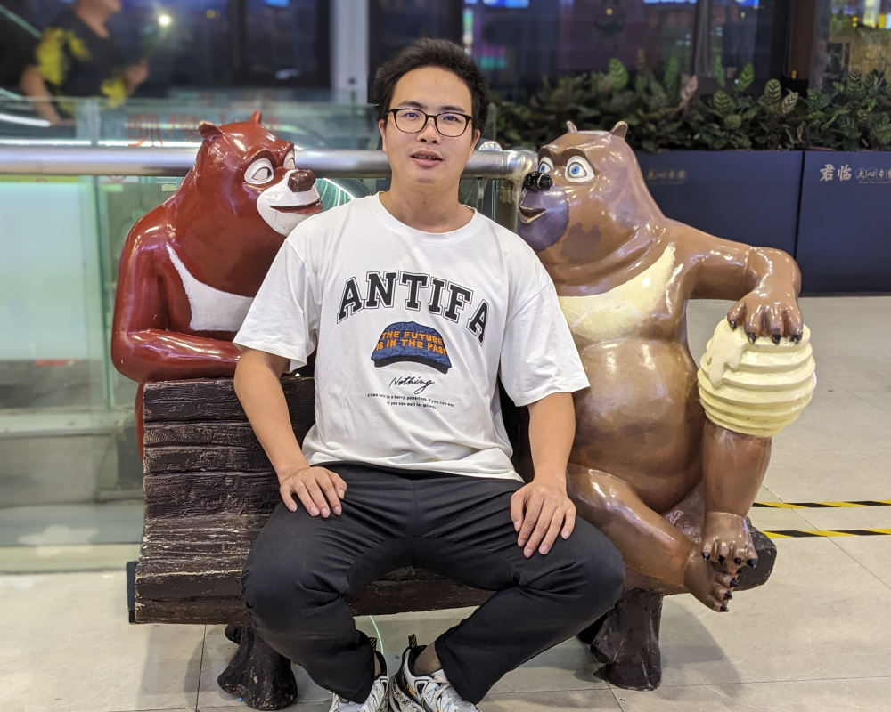

Hello, I am Cof-Lee (李茂福) <br />
A professional Cloud Computing Engineer and Network Engineer with 6 years of working experience.<br />
I love linux and network. U can contact me through email :  cof8007@gmail.com <br />
<hr />
I have obtained the following certifications : <br />
<a href="tp1/rhcsa.png">RHCSA</a> , <a href="tp1/rhce.png">RHCE</a> , <a href="tp1/rhca.png">RHCA</a> <br />
<a href="tp1/dcne.png">DCNE</a> , <a href="tp1/h3cne.png">H3CNE</a> , <a href="tp1/h3cse.png">H3CSE</a> , <a href="tp1/softnet.png">软考-网络工程师</a> <br />
<a href="tp1/hcia-ai.png">HCIA-AI</a> , <a href="tp1/hcia-openeuler.png">HCIA-openEuler</a> , <a href="tp1/hcip-openeuler.png">HCIP-openEuler</a> <br />
<a href="tp1/rz-cofable.jpg">软著-CofAble</a> , <a href="tp1/iitc-mid.jpg">IITC工信人才岗位能力评价证书-中级</a> <br />
<hr/>
Cof-Lee照片<br />

<hr />
